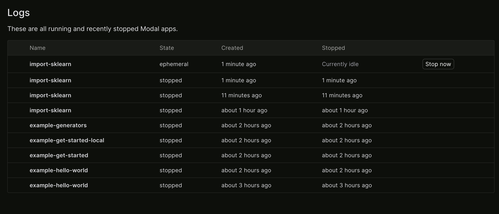
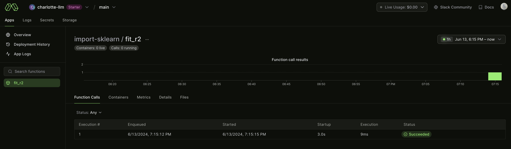

2 Building Containers
02_building_containers
Containers are like light-weight virtual machines — container engines use operating system tricks to isolate programs from each other (“containing” them), making them work as though they were running on their own hardware with their own filesystem. This makes execution environments more reproducible, for example by preventing accidental cross-contamination of environments on the same machine. For added security, Modal runs containers using the sandboxed gVisor container runtime.
Containers are started up from a stored “snapshot” of their filesystem state called an image. Producing the image for a container is called building the image.
By default, Modal functions are executed in a Debian Linux container with a basic Python installation of the same minor version v3.x as your local Python interpreter.
Customizing this environment is critical. To make your apps and functions useful, you will probably need some third party system packages or Python libraries. To make them start up faster, you can bake data like model weights into the container image, taking advantage of Modal’s optimized filesystem for serving containers.
Modal provides a number of options to customize your container images at different levels of abstraction and granularity, from high-level convenience methods like pip_install through wrappers of core container image build features like RUN and ENV to full on “bring-your-own-Dockerfile”. We’ll cover each of these in this guide, along with tips and tricks for building images effectively when using each tool.
2.1 import_sklearn.py
2.1.1 Install scikit-learn in a custom image
This builds a custom image which installs the sklearn (scikit-learn) Python package in it. It’s an example of how you can use packages, even if you don’t have them installed locally.
First, the imports:
import time
import modalNext, we’ll define an app, with a custom image that installs sklearn.
app = modal.App(
"import-sklearn",
image=modal.Image.debian_slim()
.apt_install("libgomp1")
.pip_install("scikit-learn"),
)A nice design in modal is the idea of method chaining, where the image is built by layers.
The app.image.imports() lets us conditionally import in the global scope. This is needed because we might not have sklearn and numpy installed locally, but we know they are installed inside the custom image.
with app.image.imports():
import numpy as np
from sklearn import datasets, linear_modelNow, let’s define a function that uses one of scikit-learn’s built-in datasets and fits a very simple model (linear regression) to it.
@app.function()
def fit():
print("Inside run!")
t0 = time.time()
diabetes_X, diabetes_y = datasets.load_diabetes(return_X_y=True)
diabetes_X = diabetes_X[:, np.newaxis, 2]
regr = linear_model.LinearRegression()
regr.fit(diabetes_X, diabetes_y)
return time.time() - t0Finally, we’d trigger the run locally, which we time with time.time() - t0.
Observe that the first time we run this snippet, it will build the image. This might take 1-2 minutes.
But when we run this subsequent times, the image is already build, and it will run much faster.
if __name__ == "__main__":
t0 = time.time()
with app.run():
t = fit.remote()
print("Function time spent:", t)
print("Full time spent:", time.time() - t0)So let’s run it:
$ modal run import_sklearn.py
✓ Initialized. View run at https://modal.com/charlotte-llm/main/apps/ap-xxxxxxxxxx
Building image im-m9EoOtS0dmWsGUat8WCWFc
=> Step 0: FROM base
=> Step 1: RUN apt-get update
Get:1 http://deb.debian.org/debian bullseye InRelease [116 kB]
Get:2 http://deb.debian.org/debian-security bullseye-security InRelease [48.4 kB]
Get:3 http://deb.debian.org/debian bullseye-updates InRelease [44.1 kB]
Get:4 http://deb.debian.org/debian bullseye/main amd64 Packages [8068 kB]
Get:5 http://deb.debian.org/debian-security bullseye-security/main amd64 Packages [275 kB]
Get:6 http://deb.debian.org/debian bullseye-updates/main amd64 Packages.diff/Index [26.3 kB]
Get:7 http://deb.debian.org/debian bullseye-updates/main amd64 Packages T-2023-12-29-1403.39-F-2023-07-31-2005.11.pdiff [6053 B]
Get:7 http://deb.debian.org/debian bullseye-updates/main amd64 Packages T-2023-12-29-1403.39-F-2023-07-31-2005.11.pdiff [6053 B]
Get:8 http://deb.debian.org/debian bullseye-updates/main amd64 Packages [18.8 kB]
Fetched 8602 kB in 4s (2239 kB/s)
Reading package lists...
=> Step 2: RUN apt-get install -y libgomp1
Reading package lists...
Building dependency tree...
Reading state information...
libgomp1 is already the newest version (10.2.1-6).
libgomp1 set to manually installed.
0 upgraded, 0 newly installed, 0 to remove and 46 not upgraded.
Creating image snapshot...
Finished snapshot; took 1.14s
Built image im-m9EoOtS0dmWsGUat8WCWFc in 8.53s
Building image im-Kndkz3TpRhPEMy6UcNR7YR
=> Step 0: FROM base
=> Step 1: RUN python -m pip install scikit-learn
Looking in indexes: http://pypi-mirror.modal.local:5555/simple
Collecting scikit-learn
Downloading http://pypi-mirror.modal.local:5555/simple/scikit-learn/scikit_learn-1.5.0-cp310-cp310-manylinux_2_17_x86_64.manylinux2014_x86_64.whl (13.3 MB)
━━━━━━━━━━━━━━━━━━━━━━━━━━━━━━━━━━━━━━━ 13.3/13.3 MB 169.9 MB/s eta 0:00:00
Requirement already satisfied: numpy>=1.19.5 in /usr/local/lib/python3.10/site-packages (from scikit-learn) (1.25.0)
Collecting scipy>=1.6.0 (from scikit-learn)
Downloading http://pypi-mirror.modal.local:5555/simple/scipy/scipy-1.13.1-cp310-cp310-manylinux_2_17_x86_64.manylinux2014_x86_64.whl (38.6 MB)
━━━━━━━━━━━━━━━━━━━━━━━━━━━━━━━━━━━━━━━ 38.6/38.6 MB 233.1 MB/s eta 0:00:00
Collecting joblib>=1.2.0 (from scikit-learn)
Downloading http://pypi-mirror.modal.local:5555/simple/joblib/joblib-1.4.2-py3-none-any.whl (301 kB)
━━━━━━━━━━━━━━━━━━━━━━━━━━━━━━━━━━━━━ 301.8/301.8 kB 252.9 MB/s eta 0:00:00
Collecting threadpoolctl>=3.1.0 (from scikit-learn)
Downloading http://pypi-mirror.modal.local:5555/simple/threadpoolctl/threadpoolctl-3.5.0-py3-none-any.whl (18 kB)
Installing collected packages: threadpoolctl, scipy, joblib, scikit-learn
Successfully installed joblib-1.4.2 scikit-learn-1.5.0 scipy-1.13.1 threadpoolctl-3.5.0
[notice] A new release of pip is available: 23.1.2 -> 24.0
[notice] To update, run: pip install --upgrade pip
Creating image snapshot...
Finished snapshot; took 2.27s
Built image im-Kndkz3TpRhPEMy6UcNR7YR in 13.14s
✓ Created objects.
├── 🔨 Created mount /modal-examples/02_building_containers/import_sklearn.py
└── 🔨 Created function fit.
Inside run!
Stopping app - local entrypoint completed.
✓ App completed. View run at https://modal.com/charlotte-llm/main/apps/ap-xxxxxxxxxxThat took 8.53s to build the first image, 2.27s to create the snapshot and 13.14s to build the second image.
But if we run this again, it’ll be much faster than before as we’ve already.
2.2 import_sklearn_r2.py
Just for fun, let’s modify this script to now output the R^2 value on the test data.
import_sklearn_r2.py
import time
import modal
app = modal.App(
"import-sklearn",
image=modal.Image.debian_slim()
.apt_install("libgomp1")
.pip_install("scikit-learn"),
)
with app.image.imports():
import numpy as np
from sklearn import datasets, linear_model
from sklearn.model_selection import train_test_split
from sklearn.metrics import r2_score
@app.function()
def fit():
print("Inside run!")
X, y = datasets.load_diabetes(return_X_y=True)
X = X[:, np.newaxis, 2]
X_train, X_test, y_train, y_test = train_test_split(X, y, test_size=0.33, random_state=42)
regr = linear_model.LinearRegression()
regr.fit(X_train, y_train)
predict = regr.predict(X_test)
return r2_score(predict, y_test)
if __name__ == "__main__":
t0 = time.time()
with app.run():
t = fit.remote()
print("R Squared is:", t)
print("Full time spent:", time.time() - t0)Running this, we get:
$ modal run import_sklearn_r2.py
✓ Initialized. View run at https://modal.com/charlotte-llm/main/apps/ap-xxxxxxxxx
✓ Created objects.
├── 🔨 Created mount /modal-examples/02_building_containers/import_sklearn_r2.py
└── 🔨 Created function fit.
Inside run!
Stopping app - local entrypoint completed.
✓ App completed. View run at https://modal.com/charlotte-llm/main/apps/ap-xxxxxxxxxxThis result somewhat surprised me.
First, I didn’t see the output R^2. I was expecting this perhaps the first time running, but didn’t see it.
Second, after running, unlike the previous example that shut down immediately, this container was running ephemerally:

So let’s rerun, but this time renaming our function from fit to fit_r2:
$ modal run import_sklearn_r2.py
✓ Initialized. View run at https://modal.com/charlotte-llm/main/apps/ap-xxxxxxxxxx
✓ Created objects.
├── 🔨 Created mount /modal-examples/02_building_containers/import_sklearn_r2.py
└── 🔨 Created function fit_r2.
Inside run!
Stopping app - local entrypoint completed.
✓ App completed. View run at https://modal.com/charlotte-llm/main/apps/ap-xxxxxxxxxxThis avoided the issue of perpetually running but didn’t print the R^2 to console:

Instead, I modified to put the print within the function such that:
@app.function()
def fit_r2():
print("Inside run!")
X, y = datasets.load_diabetes(return_X_y=True)
X = X[:, np.newaxis, 2]
X_train, X_test, y_train, y_test = train_test_split(X, y, test_size=0.33, random_state=42)
regr = linear_model.LinearRegression()
regr.fit(X_train, y_train)
predict = regr.predict(X_test)
r2 = r2_score(predict, y_test)
print("R squared is:", r2) # added this
return r2When doing this, I now get the result I want:
$ modal run 02_building_containers/import_sklearn_r2.py
✓ Initialized. View run at https://modal.com/charlotte-llm/main/apps/ap-xxxxxxxxxx
✓ Created objects.
├── 🔨 Created mount /Users/ryan/modal-examples/02_building_containers/import_sklearn_r2.py
└── 🔨 Created function fit_r2.
Inside run!
R squared is: -0.8503156043967386
Stopping app - local entrypoint completed.
✓ App completed. View run at https://modal.com/charlotte-llm/main/apps/ap-xxxxxxxxxxIt’s important to mindful of scope of local versus remote when using Modal. This will be an extended discussion we’ll see in later examples.
2.3 install_cuda.py
The next examples shows how to use the Nvidia CUDA base image from DockerHub.
Here’s a list of the different CUDA images available.
We need to add Python 3 and pip with the add_python option because the image doesn’t have these by default.
install_cuda.py
from modal import App, Image
image = Image.from_registry(
"nvidia/cuda:12.2.0-devel-ubuntu22.04", add_python="3.11"
)
app = App(image=image)
@app.function(gpu="T4")
def f():
import subprocess
subprocess.run(["nvidia-smi"]).from_registry
You don’t always need to start from scratch! Public registries like Docker Hub have many pre-built container images for common software packages.
You can use any public image in your function using Image.from_registry, so long as:
- Python 3.8 or above is present, and is available as python
pipis installed correctly- The image is built for the
linux/amd64platform - The image has a valid
ENTRYPOINT
from modal import Image
sklearn_image = Image.from_registry("huanjason/scikit-learn")
@app.function(image=sklearn_image)
def fit_knn():
from sklearn.neighbors import KNeighborsClassifier
...If an existing image does not have either python or pip set up properly, you can still use it. Just provide a version number as the add_python argument to install a reproducible, standalone build of Python:
from modal import Image
image1 = Image.from_registry("ubuntu:22.04", add_python="3.11")
image2 = Image.from_registry("gisops/valhalla:latest", add_python="3.11")The from_registry method can load images from all public registries, such as Nvidia’s nvcr.io, AWS ECR, and GitHub’s ghcr.io.
Modal also supports access to private AWS ECR and GCP Artifact Registry images.
Running it provides:
$ modal run install_cuda.py
✓ Initialized. View run at https://modal.com/charlotte-llm/main/apps/ap-xxxxxxxxxx
Building image im-NAV0762Ag7PgTCJY8XyAqb
=> Step 0: FROM nvidia/cuda:12.2.0-devel-ubuntu22.04
Getting image source signatures
Copying blob sha256:9a9dd462fc4c5ca1dd29994385be60a5bb359843fc93447331b8c97dfec99bf9
Copying blob sha256:9fe5ccccae45d6811769206667e494085cb511666be47b8e659087c249083c3f
Copying blob sha256:aece8493d3972efa43bfd4ee3cdba659c0f787f8f59c82fb3e48c87cbb22a12e
Copying blob sha256:bdddd5cb92f6b4613055bcbcd3226df9821c7facd5af9a998ba12dae080ef134
Copying blob sha256:8054e9d6e8d6718cc3461aa4172ad048564cdf9f552c8f9820bd127859aa007c
Copying blob sha256:5324914b447286e0e6512290373af079a25f94499a379e642774245376e60885
Copying blob sha256:95eef45e00fabd2bce97586bfe26be456b0e4b3ef3d88d07a8b334ee05cc603c
Copying blob sha256:e2554c2d377e1176c0b8687b17aa7cbe2c48746857acc11686281a4adee35a0a
Copying blob sha256:4640d022dbb8eb47da53ccc2de59f8f5e780ea046289ba3cffdf0a5bd8d19810
Copying blob sha256:aa750c79a4cc745750c40a37cad738f9bcea14abb96b0c5a811a9b53f185b9c9
Copying blob sha256:9e2de25be969afa4e73937f8283a1100f4d964fc0876c2f2184fda25ad23eeda
Copying config sha256:fead46ae620f9febc59f92a8f1f277f502ef6dca8111ce459c154d236ee84eee
Writing manifest to image destination
Unpacking OCI image
• unpacking rootfs ...
• ... done
• unpacked image rootfs: /tmp/.tmpDUhHRA
=> Step 1: COPY /python/. /usr/local
=> Step 2: RUN ln -s /usr/local/bin/python3 /usr/local/bin/python
=> Step 3: ENV TERMINFO_DIRS=/etc/terminfo:/lib/terminfo:/usr/share/terminfo:/usr/lib/terminfo
=> Step 4: COPY /modal_requirements.txt /modal_requirements.txt
=> Step 5: RUN python -m pip install --upgrade pip
Looking in indexes: http://pypi-mirror.modal.local:5555/simple
Requirement already satisfied: pip in /usr/local/lib/python3.11/site-packages (23.2.1)
Collecting pip
Obtaining dependency information for pip from http://pypi-mirror.modal.local:5555/simple/pip/pip-24.0-py3-none-any.whl.metadata
Downloading http://pypi-mirror.modal.local:5555/simple/pip/pip-24.0-py3-none-any.whl.metadata (3.6 kB)
Downloading http://pypi-mirror.modal.local:5555/simple/pip/pip-24.0-py3-none-any.whl (2.1 MB)
━━━━━━━━━━━━━━━━━━━━━━━━━━━━━━━━━━━━━━━━ 2.1/2.1 MB 216.4 MB/s eta 0:00:00
Installing collected packages: pip
Attempting uninstall: pip
Found existing installation: pip 23.2.1
Uninstalling pip-23.2.1:
Successfully uninstalled pip-23.2.1
Successfully installed pip-24.0
=> Step 6: RUN python -m pip install -r /modal_requirements.txt
Looking in indexes: http://pypi-mirror.modal.local:5555/simple
Ignoring cloudpickle: markers 'python_version < "3.11"' don't match your environment
Ignoring ddtrace: markers 'python_version < "3.11"' don't match your environment
Collecting aiohttp==3.8.3 (from -r /modal_requirements.txt (line 2))
...
Creating image snapshot...
Finished snapshot; took 6.10s
Built image im-NAV0762Ag7PgTCJY8XyAqb in 136.43s
✓ Created objects.
├── 🔨 Created mount /modal-examples/02_building_containers/install_cuda.py
└── 🔨 Created function f.
==========
== CUDA ==
==========
CUDA Version 12.2.0
Container image Copyright (c) 2016-2023, NVIDIA CORPORATION & AFFILIATES. All rights reserved.
This container image and its contents are governed by the NVIDIA Deep Learning Container License.
By pulling and using the container, you accept the terms and conditions of this license:
https://developer.nvidia.com/ngc/nvidia-deep-learning-container-license
A copy of this license is made available in this container at /NGC-DL-CONTAINER-LICENSE for your convenience.
Thu Jun 13 23:08:03 2024
+-----------------------------------------------------------------------------------------+
| NVIDIA-SMI 550.54.15 Driver Version: 550.54.15 CUDA Version: 12.4 |
|-----------------------------------------+------------------------+----------------------+
| GPU Name Persistence-M | Bus-Id Disp.A | Volatile Uncorr. ECC |
| Fan Temp Perf Pwr:Usage/Cap | Memory-Usage | GPU-Util Compute M. |
| | | MIG M. |
|=========================================+========================+======================|
| 0 Tesla T4 On | 00000000:36:00.0 Off | ERR! |
| N/A 32C ERR! 9W / 70W | 0MiB / 15360MiB | 0% Default |
| | | N/A |
+-----------------------------------------+------------------------+----------------------+
+-----------------------------------------------------------------------------------------+
| Processes: |
| GPU GI CI PID Type Process name GPU Memory |
| ID ID Usage |
|=========================================================================================|
| No running processes found |
+-----------------------------------------------------------------------------------------+
Stopping app - local entrypoint completed.
✓ App completed. View run at https://modal.com/charlotte-llm/main/apps/ap-xxxxxxxxxxWhile this process did take a few minutes, it’s very easy and should be very quick if rerunning.
It’s also helpful to note how to run a subprocess as we would in Python anyways:
import subprocess
subprocess.run(["nvidia-smi"])2.4 screenshot.py
In this example, we use Modal functions and the playwright package to take screenshots of websites from a list of URLs in parallel.
You can run this example on the command line with:
modal run 02_building_containers/screenshot.py --url 'https://www.youtube.com/watch?v=dQw4w9WgXcQ'playwright locally
When I first ran screenshot.py, I received an error like:
Stopping app - uncaught exception raised locally: ExecutionError('Could not deserialize remote exception due to local error:\nDeserialization failed because the \'playwright\' module is not available in the local environment.\nThis can happen if your local environment does not have the remote exception definitions.It was fixed after I installed playwright into my active local Python environment.
This should take a few seconds then create a /tmp/screenshots/screenshot.png file, shown below.

2.4.1 Setup
First we import the Modal client library.
import pathlib
import modal
app = modal.App("example-screenshot")2.4.2 Define a custom image
We need an image with the playwright Python package as well as its chromium plugin pre-installed.
This requires intalling a few Debian packages, as well as setting up a new Debian repository. Modal lets you run arbitrary commands, just like in Docker:
image = modal.Image.debian_slim().run_commands(
"apt-get update",
"apt-get install -y software-properties-common",
"apt-add-repository non-free",
"apt-add-repository contrib",
"pip install playwright==1.42.0",
"playwright install-deps chromium",
"playwright install chromium",
)2.4.3 The screenshot function
Next, the scraping function which runs headless Chromium, goes to a website, and takes a screenshot.
This is a Modal function which runs inside the remote container.
@app.function(image=image)
async def screenshot(url):
from playwright.async_api import async_playwright
async with async_playwright() as p:
browser = await p.chromium.launch()
page = await browser.new_page()
await page.goto(url, wait_until="networkidle")
await page.screenshot(path="screenshot.png")
await browser.close()
data = open("screenshot.png", "rb").read()
print("Screenshot of size %d bytes" % len(data))
return data2.4.4 Entrypoint code
Let’s kick it off by reading a bunch of URLs from a txt file and scrape some of those.
@app.local_entrypoint()
def main(url: str = "https://modal.com"):
filename = pathlib.Path("/tmp/screenshots/screenshot.png")
data = screenshot.remote(url)
filename.parent.mkdir(exist_ok=True)
with open(filename, "wb") as f:
f.write(data)
print(f"wrote {len(data)} bytes to {filename}")And we’re done! Modal’s introductory guide also has another example of a web scraper, with more in-depth logic.